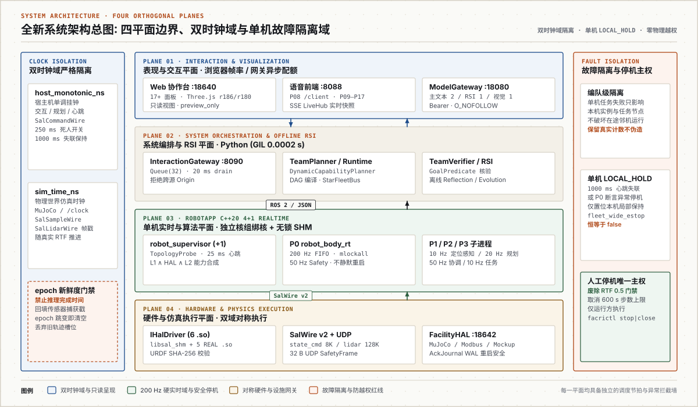
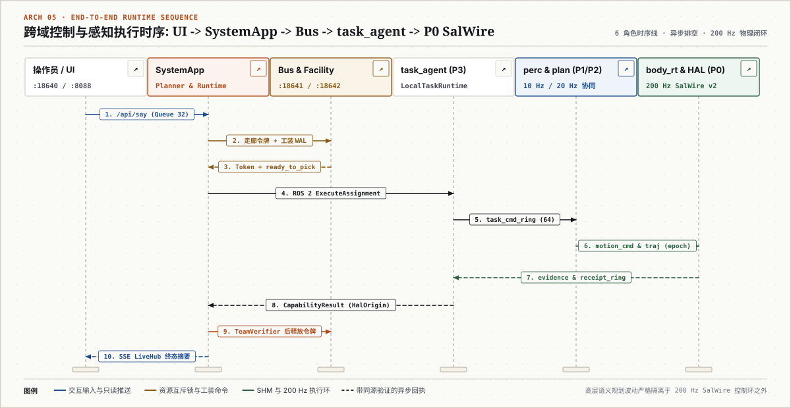

FACRI 并非单一脚本或绑定某一构型的专用控制器，而是一套跨越语义推理、分布式多机编排、硬实时运动控制与纯接触物理仿真的分层系统。整套平台按时间尺度与故障域划分为四个正交平面，使上层大模型推理的毫秒至秒级波动永远无法穿透到底层物理执行回路。

四平面正交分层架构
| 架构平面 | 核心代码域 | 调度节拍与隔离边界 | 主要职责边界 |
|---|---|---|---|
| 交互与表现平面 | apps/collaboration_platform/、apps/model_gateway/ |
浏览器渲染帧率驱动；推理网关异步限流队列 | 只读三维视口、多视图控制台、语音/视觉模型配额与路径安全门禁 |
| 系统编排与演化平面 | src/system_app/（系统节点、车队总线、交互网关） |
Python 运行时，受 0.0002 s GIL 调度基线约束 |
语义澄清、任务图编译、共享通道互斥、工装联动与离线沙箱演化 |
| 单机多进程与算法平面 | src/robot_app/、src/embodied_core/（4+1
进程） |
C++20 独立绑核：200 Hz 控制 / 50 Hz 安全 / 10–20 Hz
规划感知 |
构型能力综合、三维定位、全身导航与操作规划、单机局部保护 |
| 硬件与仿真执行平面 | src/robot_app/backends/、src/facility_hal/ |
定长零拷贝共享内存、带外 UDP 安全脉搏、WAL 日志 | 物理仿真桥接、五型真机驱动插件、工业工装与机场设施网关 |

五大核心系统不变量
为保障平台在四机连续工业产线与九机异构机场保障两类迥异场景中稳定运转，所有子系统在设计与评审中均严格维持以下五项架构不变量：
1. 跨时钟域隔离与严格新鲜度验证
物理仿真产生随负载变化或倍速缩放的仿真时间，而宿主机安全保护与硬件驱动依赖单调递增的物理挂钟。跨层协议在所有高频状态槽位内并列携带双时钟与单调递增的会话代际号，严禁将推理完成时刻回填为传感源时间；一旦发现代际跳变或帧序倒退，下游跟踪与执行器立即丢弃过期数据（具体槽位契约见跨层接口与通信契约）。
2. 定长零拷贝协议消除跨层语义耦合
无论对接双足人形、全向复合双臂、轮腿机器狗还是机场特种车辆，所有本体均经由同一套版本化定长共享内存与安全帧格式穿越进程与硬件边界，并以编译期静态断言与循环冗余校验确保结构完整。底盘速度、关节参考、夹爪动作与腕力反馈全数抽象为通用索引与标志位，绝不允许在实时物理通道内硬编码工位号或机坪业务命名。
3. 能力边界三层单调收敛
单台机器人的实际可调度能力由静态本体描述、驱动实测硬件能力与场景策略开关三层交集单调决定（详述于声明式具身规格体系）。场景配置只能收窄关闭特定辅助特性，绝不允许越权开启本体或物理硬件尚未具备的自由度与力控权限。
4. 纯接触物理可信与手动停止主权
产线抓取与放置全面采用纯刚体摩擦接触与力位柔顺控制，彻底废除隐藏吸附脚本。同时遵循工程治理裁定：废除基于实时率的自动停机门禁，物理仿真仅可由运行方操作员显式手动停止，且单机保护超时严格局限于本机局部保持而绝不牵连全编队急停（详见运行时基线与冻结治权）。
5. 透明失败留痕与受约束演化边界
任务核验严格要求执行来源与感知观测来源同域匹配，所有异常与状态进展均经由无锁环形缓冲与预写日志如实归档。自我反思与演化组件只能在离线沙箱中复盘真实失败样本并经对照测试验证候选补丁，绝不绕过门禁热改在线控制参数（机制详见系统智能体与受约束离线演化）。

延伸阅读
- 查看源码目录结构、二进制可执行文件与模块清单：参阅代码目录与进程拓扑地图。
- 检索 ROS 2 接口清点、网关路由、共享内存与安全帧布局：参阅跨层接口与通信契约。
- 核对调度基线、时钟域隔离与治权红线：参阅运行时基线与冻结治权。